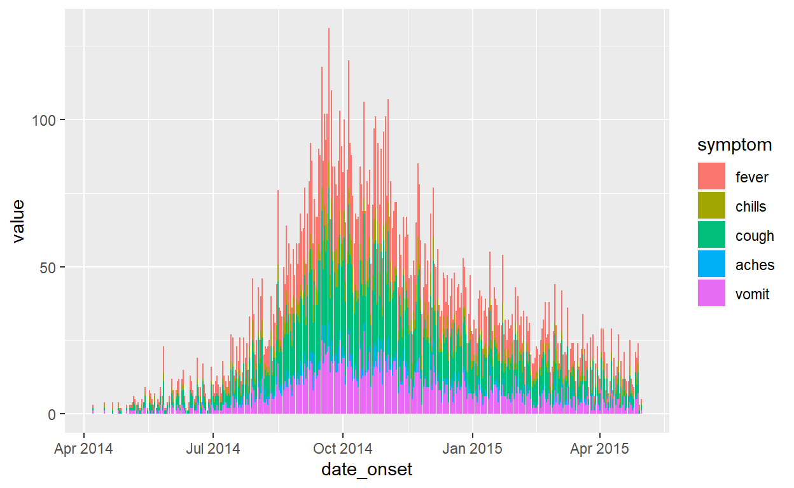

Introduction to R for Applied Epidemiology and Public Health
Tidy data

Welcome
Welcome to the course “Introduction to R for applied epidemiologists”, offered for free by Applied Epi - a non-profit organisation that offers open-source tools, training, and support to frontline public health practitioners.
This interactive tutorial focuses on tidy data in applied epidemiology, in data collection and cleaning. It aims to get you to think about how best to collect and input data for easy analysis in R, as well as teach you best practices.
Target Audience
This course is designed with the following objectives:
- Understanding what “tidy” data is
- How human-readable data differs from machine-readable data
- What data formats are preferred for data collection and data analysis
- Data collection practices to avoid and to promote
Other languages
This course is available in English.
Offline / Online
You can access this tutorial offline by downloading our R package … TO DO (Neale?)
Learning goals
In this tutorial you will learn and practice:
- Different data types and how to collect and record them
- What format is easiest for analysis in R
- How to name files, columns and values appropriately
- How to reformat your data for analysis and plotting
- What is a data dictionary and why is it useful
- How to record different types of data
This tutorial adapts parts of the Transition to R and Data cleaning and core functions section of our free Epidemiologist R Handbook, which is available for use offline as well.
Data consent
We continually improve these tutorials by collecting your entries and submitted answers to the quiz questions. By continuing, you consent to this collection and use.
To continue anonymously… do XYZ. TO DO (Neale?)
Who made this course
This course is designed by epidemiologists with decades of ground-level experience in outbreak response and local public health work.

Example datasets
In this tutorial we will use the following datasets. Please take a few minutes to review the structure and content of each dataset before continuing.
Use the arrows on the right to scroll through hidden columns. Note that these are “raw” (messy) datasets that mimic problems commonly found in real-life epidemiological datasets.
A “linelist” of cases in a fictional (not real) Ebola outbreak
A “linelist” is a term used in applied epidemiology to refer to a table that contains key information about each case or suspect case in an outbreak. Each row represents one case, and the columns contain variables such as age, sex, date of symptom onset, outcomes, etc.
This dataset contains 6611 rows and 28 columns. Below are the first 5 rows:
Click to download the raw dataset for your own practice.
Click to download the clean dataset as an .rds file for your own practice. A .rds file is an R-specific file type that preserves column classes. This ensures you will have only minimal cleaning to do after importing the data into R.
Routine surveillance: Aggregated data from malaria surveillance in a fictional country
Aggregated data in epidemiology usually means a table of counts for each facility, or district, etc. Sometimes, the counts can also be per day, week, or month.
In this fictional dataset, each facility reported daily case counts of rapid-test (RDT)-confirmed malaria. Thus, each row represents the number of cases for a specific facility on a specific day.
This dataset contains 3038 rows and 10 columns. Below are the first 5 rows:
Click to download the clean malaria counts dataset as an .rds file for your own practice. A .rds file is an R-specific file type that preserves column classes. This ensures you will have only minimal cleaning to do after importing the data into R.
Hand-collected data in Excel
Here we provide 2 Excel datasets which were hand-collected.
The first dataset contains information on hospital capacity at various sites:

” ”
The second dataset contains the planning of a study data collection:

” ”
What is tidy data?
Tidying data refers to the process of structuring your datasets for analysis. Most datasets will require some level of cleaning, a process which can make up the majority of the time you spend on your analysis depending on how “messy” your dataset is.
Whilst the process of tidying your dataset will vary depending on the data and analysis type, in this tutorial we will go through different principles of tidy data and their value in getting your dataset analysis-ready, i.e. machine-readable “tidy” data instead of messy human-readable data. Human-readable data is what you might see on Excel, i.e. a spreadsheet which uses colours or merged cells to facilitate understanding. The use of such features do not use the logic used by computers, and so may cause issues when it comes to analysing your data. Before going into detail into what a machine-readable dataset looks like, let’s go over some key terminology.
Data semantics
A dataset contains different values, these are generally either numbers (if dealing with quantitative data) or strings (i.e. text, if dealing with qualitative data). These values are associated to a variable and an observation. A variable is an attribute to which the different values belong to, with one given unit for all the different values, for example temperature, age or weight. An observation refers to the values across different variables for one measure of the data, for example per person, date or country.
Let’s test your understanding of these terms.
Principles of tidy data
These are the three main requirements for “tidy” data:
- Each variable must have its own column
- Each observation must have its own row
- Each value must have its own cell
Why is it important to make sure your data is tidy?
- In making sure the data you collect or analyse is tidy, you follow a consistent data structure. This consistency will make it easier to learn and apply tools to different datasets. It will also make your analyses more efficient.
- When working with R, placing variables in columns allows for easy manipulation of data that feels natural. Most of the packages from the tidyverse are designed to work with tidy data.
What a “tidy” dataset looks like
Here is a subset of the malaria routine surveillance dataset, presented in 3 ways. Take a bit of time to explore each of these.
table1table2table3Answer
Only table2 is tidy as it is the only one where each
column is a variable and each cell has its own value and each
observation has its own row.
Tidy data practices
Tidy data for analysis
An example of “tidy” data would be the case linelist used throughout these tutorials - each variable has its own column, each observation (one case) has its own row, and every value is in just one cell. Below you can view the first 50 rows of the linelist:
Data presentation
Let’s see how data presentation may affect how easy it is to analyse the data. Here is a subset of the linelist presented in 3 ways. This dataset presents data on symptoms for each case, as well as which generation the case belongs to. Take your time to go through each dataset to see in what ways the data is presented differently.
linelist1
linelist2
linelist3
Now here is a little exercise: for each case generation, compute the number of patients with fever. To do so, you will need to:
- Make sure the values recorded are clean.
- Extract the cases for each generation (using
group_by()). - Compute the sum of cases with fever in each of these group (using
summarize()andsum). - Store back in the appropriate place.
# Checking that recorded values are 'clean'
unique(linelist$fever)
# Remove rows where there is no input value
linelist_tidy <- linelist %>%
filter(!is.na(fever))# Compute the number of fever cases by generation
linelist_nfever <- linelist_tidy %>%
group_by(generation) %>%
summarise(n_fever=sum(fever=="yes"))
linelist_nfever Answer
Dataset linelist3 is easiest to work with in R
because:
- Each variable has its own column
- Each observation has its own row
- Each value has its own cell
In a dataset where one cell contains more than one value, such as
linelist1, extracting the relevant value may be overly
complicated: you might have to resort to using pattern recognition
functions (such as grep() or separate()) or,
in this case, filter away the “no” (using the ! operator,
so that the summarise function becomes:
summarise(n_fever=sum(!fever=="no"))), but this might not
always be applicable.
In a dataset where different variables are contained in the same
column, such as shown in linelist2, you will have to filter
for your variable of interest, which requires one extra line of code.
Whilst this dataset does not follow tidy data principles, we will see
later how such formats may sometimes be easier for data analysis.
“Human”- vs. “Machine”-readability
Excel is a powerful and user-friendly software which is a good example of how data may be recorded in a user-friendly way. Whilst it is also possible to do some analysis in Excel, you may find that you quickly may be limited in the type of analyses you can do and more complex operations may become very complicated to carry out in this software. This is where programs such as R become very powerful. In this series of tutorials, you should have begun to get more familiarised with how R works. In this section, we will focus on the transition from Excel to R for data analysis, with things to avoid, how to deal with transition or import issues, and recommendations for best practices.
Excel-to-R resources
Here are some links to tutorials to help you transition to R from Excel:
R-Excel interaction
R has robust ways to import Excel workbooks, work with the data, export/save Excel files, and work with the nuances of Excel sheets.
It is true that some of the more aesthetic Excel formatting can get lost in translation (e.g. italics, sideways text, etc.). If your work flow requires passing documents back-and-forth between R and Excel while retaining the original Excel formatting, try packages such as openxlsx.
Non-tidy data
The main reason one encounters non-tidy data is because many Excel spreadsheets are designed to prioritize easy reading by humans, not easy reading by machines/software.
“Tidy” datasets may not be as readable to a human eye, but they make data cleaning and analysis much easier!
To help you see the difference, below are some fictional examples of non-tidy data that prioritize human-readability over machine-readability. Here is our hospital capacity dataset in Excel:
” ”
These different options have already given you quite a few things to think about! Let’s now go over specific issues that you may encounter when importing a dataset from Excel to R.
Merged cells

” ”
Problems: In the spreadsheet above, there are merged cells which are not easily digested by R. Which row should be considered the “header” is not clear.
Answer
R cannot recognise the merged cell format, so all cells but the first one included in the merged environment will be read as cells with empty values! You can imagine that this will not only make the analysis of the dataset harder, it will also lead to a loss of data.
Let’s load this dataset to R, to see what issues these merged cells would mean in terms of data values.
As you see, loading this dataset to R in the given Excel format leads to data loss in multiple ways:
- Most columns do not have the right header
- Many observations (i.e. rows) are missing data
- The actual values of interest are not all in the right rows.
Conclusions
When collecting data for analysis, it is best to avoid the use of merged cells. Try and think of ways to represent your data that avoids having the combine cells and if you can’t, you should then replicate the value in each cell that is relevant. Remember that variables are represented in columns, and think of the most efficient way of showing this (for example, date can be written in one column rather than spread across multiple ones).
Empty cells
” ”
Problems: In the spreadsheet above, there are numerous extra empty rows and columns within the dataset - this will cause cleaning headaches in R.
Answer
The empty columns in this dataset are likely to be the most
problematic out of the options given above, as you will probably
manually have to remove these. The empty rows from row number 4 onwards
are also an issue, as they actually imply the value that is given in the
cell above, but will be recorded as NA values. This will
require significant extra cleaning. On the other hand, the values in the
column Patients are actually missing. In this case, it
would be wiser to write NA in each of the cells of this
column, to explicitly indicate that these data are missing for this
particular variable.
Colour dictionaries
” ”
Problems: A color-based dictionary is to the right side of the dataset shown above and cell values are represented by colors - which is also not easily interpreted by R (nor by humans with color-blindness!). Furthermore, different pieces of information are combined into one cell (multiple partner organizations working in one area, or the status “TBC” in the same cell as “Partner D”).
Answer
Whilst colour dictionaries may be helpful for human-readability of a dataset, colours should never be used as the only way of recording data as machines will not be able to interpret it for analysis. Again, it is important to think of how best to represent that data layer, probably by adding an extra variable column. As a general rule, dictionaries (whether they are colour dictionaries as shown here or data dictionaries) should be kept separately from the main table. In Excel, it would be best practice to have this dictionary on another sheet. When loading it to R, you can then load it as a separate dataframe. But we’re getting ahead of ourselves… More on data dictionaries later!
Pivoting data for analysis
Whilst the principles of tidy data given to you previously are the most convenient for storing your data, they might not always be the most efficient for data analysis. You might sometimes require an extra step of data manipulation before you start your analysis.
“Wide” and “long” data
Here is a representation of what a pivoting a dataset looks like.
“Wide” data
A “wide” dataset is a dataset in which each variable is a column and its respective value is listed in that column. Each row of data will therefore contain many values, each of which represents a different variable. In wide datasets, filtering the data might not be necessary as all the reader would need to do is take the information from specific columns.
While this may be useful for presentation, it is not ideal for some types of analysis. Wide datasets are quite voluminous and take longer to read in R. It is also harder to manipulate a wide dataset for analysis.
The R functions pivot_wider() (from package
tidyr) or cast() (from package
reshape2) transforms data to wide formats.
“Long” data
In “long” datasets, the different variables are listed in one column and their respective values listed in another column. A long dataset would therefore have at minimum 2 columns, but could also have more columns than that (for example, if we are listing malaria cases by country and year, we could have 3 columns as shown in the Figure above).
Long datasets are much easier to read in R (even if they contain many
rows) and are required for many types of analyses, including plotting
with ggplot2 or most modelling functions. However, these
types of datasets may not be the most intuitive for the human eye.
The R functions pivot_longer()(from package
tidyr) or melt() (from package
reshape2) transforms data to long formats.
Impact of pivoting for plotting
Let’s look at our Ebola linelist again. If we wanted to plot the evolution of symptoms over time, coloured by symptom, which of the following data formats do you think would be easiest to work with?
linelist1
linelist2
linelist3
Answer
Here, you can see that a long data format, as represented in
linelist2, is easiest to work with for plotting:
ggplot(linelist2, aes(x = date_onset,
y = value,
fill = symptom)) +
geom_bar(position = "stack", stat = "identity")
Trying to get this plot with the data format shown in
linelist1 or linelist3 would be much more
complex!
Impact of pivoting for data analysis
Let’s look again at our malaria surveillance dataset in three different ways:
malaria_counts1
malaria_counts2
malaria_counts3
You are trying to get the total number of positive malaria RDT results per age category for each district, as well as the number of locations and days these were collected over.
Answer
Here, you can see that a long data format, as represented in
malaria_counts1, is easiest to work with for this
analysis:
malaria_counts1 %>% group_by(District,rdt_age_cat) %>%
summarise(n_rdt=sum(value),
n_facilities=n_distinct(location_name),
n_days=n_distinct(data_date))Trying to get this plot with the data format shown in
malaria_counts2 would be much more complex (and impossible
with malaria_counts3 as there is no information on
age)!
Data dictionaries
A data dictionary, also sometimes referred to as a ‘key’, is a separate table from your main recording sheet. This dictionary allows to specify what specific variables mean, whether they be column names, colours, or other.
Variable definition
A data dictionary describes what each column header represents. For
example, when we look at the linelist dataset, what each of
the column names represent may not be clear to someone not familiar with
the data.
Answer
Even if you are familiar with the dataset, the meaning of the column names may not be obvious! That’s when data dictionaries become useful, as they will provide information on the column name meaning.
Listing possible values and levels
Data dictionaries can also be helpful to specify which of the different values one variable can have. For example, you could specify what unit the numerical variable is recorded in. This can also be helpful if there is a set amount of values the variable can have, for example if recording age groups, you could specify how many groups age is broken into. This is similar to what a cell with a drop-down list of values would provide in Excel.
Data dictionary example
Below is the data dictionary for this dataset:
| Column | Description |
|---|---|
| case_id | case identification number assigned by MOH |
| generation | transmission chain generation number |
| date_infection | estimated date of infection, YYYY-MM-DD |
| date_onset | date of symptom onset, YYYY-MM-DD |
| date_hospitalisation | date of initial hospitalization, YYYY-MM-DD |
| date_outcome | date of outcome status determination |
| outcome | either ‘Death’ or ‘Recovered’ or ‘Unknown’ |
| gender | either ‘m’ or ‘f’ or ‘unknown’ |
| age | age number |
| age_unit | age unit, either ‘years’ or ‘months’ or ‘days’ |
| age_years | age in years |
| age_cat | age category, either ‘0-4’ or ‘5-9’ or ‘10-14’ or ‘15-19’ or ‘20-29’ or ‘30-49’ or ‘50-69’ or ‘70+’ |
| age_cat5 | age category, subdivided by 5 years age ranges |
| hospital | Name of hospital of first admission |
| lon | longitude of residence, approx |
| lat | latitude of residence, approx |
| infector | case_id of infector |
| source | context of known transmission event |
| wt_kg | weight, in kilograms |
| ht_cm | height, in centimeters |
| ct_blood | blood count |
| fever | presence of fever on admission, either ‘yes’ or ‘no’ |
| chills | presence of chills on admission, either ‘yes’ or ‘no’ |
| cough | presence of cough on admission, either ‘yes’ or ‘no’ |
| aches | presence of aches on admission, either ‘yes’ or ‘no’ |
| vomit | presence of vomiting on admission, either ‘yes’ or ‘no’ |
| temp | patient temperature, in Celsius |
| time_admission | time of hospital admission HH:MM |
This data dictionary allows to understand what each column value means, as well as what units the values were recorded in. These help keep dataframes tidy, so that the loaded dataframe can be understood by computers but the epidemiologist still has a clear understanding of what each column represents.
It is good practice to create data dictionaries when you collect data and create new templates. These will also allow you to have column names that are easier to use for analysis. When creating your template in Excel, try to remember these tips so that your analysis in R will be as easy as possible:
- Keep column name concise
- Do not use spaces, but rather underscores (
_) - Avoid the use of special characters, such as hyphen
(
-), commas (,), percentage signs (%), or currency signs (for example$or£). These will either not be read by R or the column names will then have to be called on using backticks - Avoid recording unit values in column name unless the unit is shown in multiple units (it might be worth considering creating a new column for the value unit in this case)
- Bold or italics will not be read by R
- Stay consistent in how you name columns (for example, avoid mixing upper- and lower-case and if possible, keep column names all in lower-case)
Data dictionary variable descriptions
Thinking of the best practices you have just learned, try to answer the following questions.
Conclusions
Data dictionaries are extremely useful and important if the data is recorded by multiple people or analysed by people that were not the collectors. Being as explicit as possible in the dictionary minimises the risk of misunderstanding and inaccurate recording. Data dictionaries should be kept in separate documents or sheets of your Excel document.
Recording data
When recording data, the most important aspect is to stay consistent. This will help minimise the time it takes to clean the data as well as re-use the same code on new data.
Recording dates
Dates can be recorded in numerous formats. For example:
- The order of days, months, or years may change
- The numbers required for days, months, or years may change
- Months may be written numerically or as characters
- If using a numerical date, the separator may change
Answer
Dates can be recorded in multiple ways, none of which is particularly superior to another. The most important aspect to remember is to stay consistent in how the date is recorded, whether that is numerically or in strings, the type of separator used, the order or the amount of numbers expected for days, months, years or hours and minutes!
Recording gender
Conclusions
When recording genders, consistency is key, whichever format is used. The letters ‘F’ and ‘M’ are generally widely understood. Note that this needs to come with a data dictionary so that if other initials are used (for example H and F for ‘homme’ and ‘femme’, in French), the person analysing the data will be aware of what these represent If using a binary format to represent gender, a data dictionary is crucial to specify which number refers to which gender. Whilst not incorrect, it is generally better to avoid spelling out the gender as this leaves more room for typos or using different styles of letter capitalisation (which will be read out as different values in R).
Recording location
Look at the GPS column in the dataset below:
” ”
Answer
There are two issues with how this data is recorded:
- The data is recorded in multiple formats
- The data is recorded over multiple rows
Answer
GPS coordinates can be given in different formats:
- Degrees, minutes and seconds (DMS), for example: 41°24’12.2”N 2°10’26.5”E
- Degrees and decimal minutes (DMM), for example: 41 24.2028, 2 10.4418
- Decimal degrees (DD), for example: 41.40338, 2.17403
Any of these units are fine to record in, but the most important rule to remember when recording location is to stay consistent with the format you are using.
Good practices for collecting and storing data
In this tutorial, you have learned about what tidy data is and its importance for data analysis. Let’s review some of these concepts which will be important to keep in mind next time you design a dataset.
Collecting data
Before collecting your data, think of:
- Your investigation objectives and the data needed to fulfill these
- Your outcome measures
- Your measures of exposure
- Other relevant variables that may act as possible confounders
- If this is data that will be collected over a certain period of time or by different people, think of the format your are creating for collection: is it explicit? Is it expandable?
An ideal dataset will be exhaustive enough to permit your analysis without being too complicated to fill when collecting the data.
Storing data
In this tutorial we have shown you examples of datasets stored in Excel and analysed in R. Whether using this format or not, keep in mind that:
- Each variable should be in a column for collection (these may be grouped together for analysis)
- Each observation should have its own row (these may be grouped together for analysis)
- Each value should have its own cell
When creating your data collection template and when collecting data, remember to:
- Have clear, explicit and concise column names
- Avoid the use of special characters (eg greek letters or accents)
- Specify the unit of each variable, if relevant, and use the same unit throughout that column
- Specify the different levels of each variable, if relevant, and only use those throughout that column
- Be consistent with your use of capitalisation throughout your column
- Explicitly state is your data is missing
- Do not leave cells empty if they imply another meaning
- Avoid the use of merged cells
- Avoid the use of colours
If collecting data over multiple sheets, think of:
Whether is makes sense to collect it over multiple sheets. For example, if each sheet represents recording for a different location or month, could you not instead add a column to specify which location/month the observation belongs to?
If it makes sense to have your data across multiple sheets but you are recording common variables across both sheets, stay consistent in how you are recording your data and the units that you are using! Also stay consistent in which cells you are recording your data so you can automate your data extraction from the Excel sheets into R (rather than manually selecting which cells you will extract data from in each sheet!)